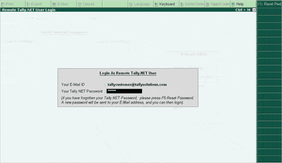

Access Support Centre from any machine where Tally.ERP 9 has been installed and activated or is in the Educational mode.
To login to Support Centre:
Invoke Tally.ERP 9
Select Support Centre or press Ctrl + H. The Remote Tally.NET User Login screen is displayed.
Enter the Tally.NET ID in Your E-Mail ID field. Click here to know more about the login ID.
Enter the password in Your Tally.NET Password field.
The Remote Tally.NET User Login screen is displayed as shown.

Press Enter
Note: If the User ID (Tally.NET ID) is configured with more than one Account ID, the Select Account option along with the list of User Accounts pops up when you press Enter. Click here to view a sample.
· Select the required Account ID
The Support Centre screen is displayed.